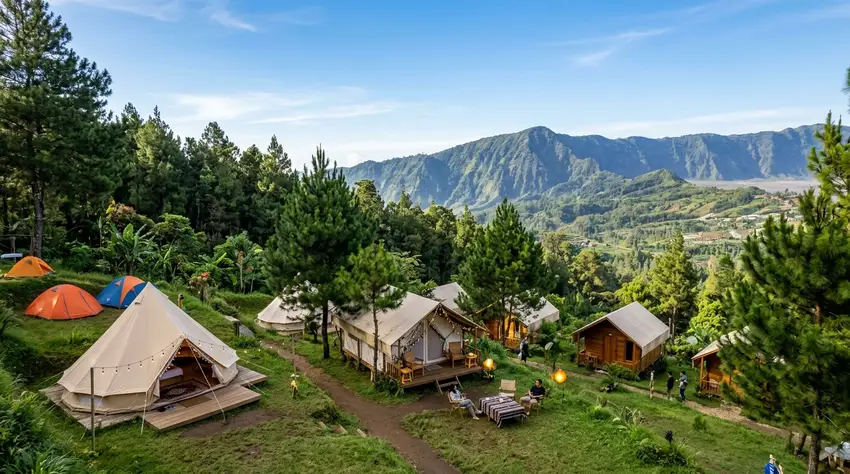

Tips menginap di glamping Batu Malang meliputi memilih waktu kunjungan yang tepat, membawa pakaian hangat, memeriksa cuaca, dan mengonfirmasi akses serta fasilitas dengan pengelola.
Ringkasan Inti
- Musim kemarau umumnya lebih nyaman untuk aktivitas luar ruang.
- Udara Batu bisa dingin pada malam hari, sehingga pakaian berlapis sangat disarankan.
- Konfirmasi akses jalan, jam check-in, dan fasilitas sebelum berangkat.
- Bawa perlengkapan pribadi dan perlengkapan darurat sederhana.
- Jaga keselamatan saat memakai api unggun dan memanfaatkan area terbuka.
Kota Batu berada pada ketinggian sekitar 700 hingga 1.700 meter di atas permukaan laut, dengan suhu harian yang umumnya sekitar 17 hingga 25 derajat Celsius (sumber: gambaran klimatologi BMKG dan profil Kota Batu, data beberapa tahun terakhir). Pada malam dan dini hari, udara sering terasa lebih dingin daripada angka rata-rata tersebut.
Kapan Waktu Terbaik Menginap di Glamping Batu Malang?
Waktu terbaik menginap di glamping Batu Malang umumnya musim kemarau karena langit lebih cerah, tetapi musim hujan tetap bisa dinikmati dengan persiapan cuaca yang baik.
Pada musim kemarau, pengunjung lebih mudah menikmati matahari terbit, kegiatan luar ruang, dan langit malam. Namun, periode ini bertepatan dengan libur sekolah sehingga lokasi bisa ramai.
Pada musim hujan, kabut dan gerimis memberi suasana berbeda. Aktivitas luar ruang mungkin terbatas, jadi siapkan rencana cadangan seperti bermain papan, menikmati minuman hangat, atau mengunjungi atraksi dalam ruangan.
Apa Saja Barang yang Perlu Dibawa ke Glamping?
Barang penting untuk glamping meliputi jaket tebal, pakaian berlapis, perlengkapan mandi, obat pribadi, senter, power bank, alas kaki nyaman, dan perlengkapan khusus untuk anak.
Berikut daftar praktis:
- Jaket, kaus kaki, dan penutup kepala untuk malam hari
- Sandal dan sepatu yang nyaman untuk jalan menanjak
- Obat pribadi dan perlengkapan P3K sederhana
- Senter atau lampu kecil serta power bank
- Jas hujan atau payung
- Pelembap bibir dan kulit untuk udara sejuk
- Camilan ringan dan botol minum
Tanyakan kepada pengelola apakah handuk, selimut tambahan, dan perlengkapan mandi sudah disediakan agar bawaan tidak berlebihan.

Kenyamanan tenda glamping premium dengan panorama alam pegunungan sejuk di Kota Batu Malang.
Bagaimana Menghadapi Udara Dingin Malam Hari di Batu?
Hadapi udara dingin malam hari di Batu dengan mengenakan pakaian berlapis, memakai selimut tambahan, minum minuman hangat, dan memastikan tenda menyediakan pemanas atau perlindungan angin.
Hindari mengenakan pakaian lembap saat tidur. Pakaian kering dan kaus kaki hangat membantu menjaga suhu tubuh.
Jika membawa anak kecil atau lansia, tanyakan lebih dulu tentang kondisi tenda dan ketersediaan selimut tambahan. Anggota rombongan dengan kondisi kesehatan tertentu sebaiknya berkonsultasi kepada tenaga kesehatan sebelum bepergian ke dataran tinggi.
Apa yang Perlu Dikonfirmasi Sebelum Berangkat?
Sebelum berangkat, konfirmasi tipe tenda, jam check-in, akses jalan, parkir, fasilitas yang termasuk, jadwal makan, dan kebijakan perubahan jadwal kepada pengelola glamping.
Akses menuju glamping di lereng bisa menanjak, sempit, atau licin saat hujan. Tanyakan apakah kendaraan pribadi dapat masuk dan apakah tersedia petugas yang membantu.
Simpan bukti pemesanan dan kontak resmi pengelola. Jika tiba larut malam, beri tahu pengelola agar proses check-in tetap lancar.
Bagaimana Menjaga Keselamatan Selama Menginap?
Jaga keselamatan di glamping dengan mengikuti aturan pengelola, berhati-hati saat memakai api unggun, mengawasi anak, dan membawa senter saat bergerak pada malam hari.
Gunakan api unggun hanya di area yang disediakan dan jangan meninggalkannya tanpa pengawasan. Simpan barang berharga secara aman dan kunci kendaraan seperti biasa.
Perhatikan peringatan cuaca dari sumber resmi seperti BMKG. Jika terjadi hujan deras atau angin kencang, ikuti arahan petugas lokasi.
Apa yang Sebaiknya Dilakukan Selama di Glamping?
Selama di glamping, nikmati waktu santai dengan berjalan pagi, sarapan di teras, menikmati api unggun, mengamati langit malam, dan menyisakan waktu tanpa jadwal padat.
Banyak pengunjung terlalu penuh merencanakan destinasi sehingga tidak sempat menikmati penginapan. Sisakan setidaknya setengah hari untuk bersantai di lokasi.
Hormati tamu lain dengan menjaga volume suara pada malam hari dan membuang sampah pada tempatnya. Kebiasaan sederhana ini membantu menjaga suasana tetap nyaman.
FAQ
Biasanya tidak wajib karena glamping mewah umumnya menyediakan selimut dan linen. Namun, konfirmasi dulu kepada pengelola, terutama jika sensitif terhadap dingin atau membawa anak kecil.
Bisa, selama tenda kedap air dan akses aman. Siapkan jas hujan, alas kaki anti licin, serta rencana kegiatan dalam ruangan jika hujan berlangsung lama.
Sebaiknya check-in sebelum sore agar sempat mengenal lokasi dan menikmati suasana. Jika tiba malam, beri tahu pengelola lebih dulu agar proses penerimaan tamu tetap lancar.
Menginap di glamping Batu Malang akan lebih nyaman dengan persiapan yang tepat: pilih waktu kunjungan yang sesuai, bawa pakaian hangat, konfirmasi akses dan fasilitas, serta patuhi aturan keselamatan.